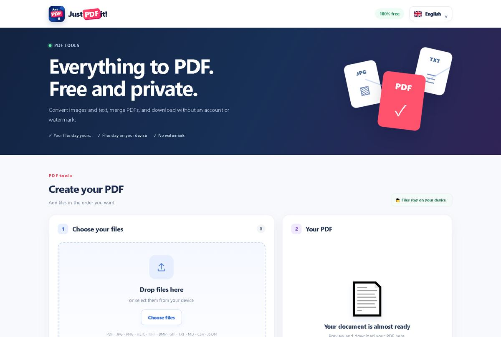
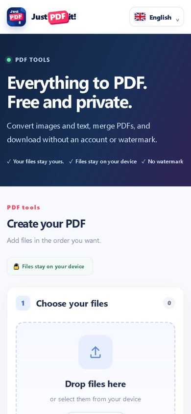

🔒 Vos documents restent sur votre appareil
Pour les fonctions locales prises en charge, le document est traité dans le navigateur : il n’est pas envoyé à un serveur de conversion.
Convertissez vos photos et textes, fusionnez vos PDF et gardez vos documents à portée de main. Sans compte et sans filigrane.
Ajoutez un ou plusieurs fichiers. L'ordre affiché sera celui du PDF final.
ou sélectionnez-les depuis votre appareil
PDF · JPG · PNG · HEIC · TIFF · BMP · GIF · TXT · MD · CSV · JSONUne fois vos fichiers convertis, prévisualisez et téléchargez votre PDF ici.
Les documents Office (Word, Excel, PowerPoint) ne sont pas encore pris en charge. Aucun fichier n'est renommé artificiellement en PDF.
Choisissez ce dont vous avez besoin et obtenez votre document en quelques clics. Des outils gratuits, simples et respectueux de vos fichiers.
Ajoutez une signature manuscrite, dessinée ou importée. Téléchargement gratuit avec un lien JustPDFit discret.
Transformez vos images et fichiers texte compatibles en un PDF, en quelques clics.
Réunissez plusieurs PDF dans l’ordre de votre choix, directement dans le navigateur.
Sélectionnez les pages à conserver et enregistrez un nouveau PDF.
Rassemblez vos photos JPG et PNG dans un PDF multipage.
Ajoutez textes, dates, cases à cocher, signatures, initiales, images et surlignages sur plusieurs pages. Export gratuit avec petits filigranes.
Les PDF enregistrés restent dans ce navigateur, sur cet appareil.
Convert images and text, combine files, and scan paper documents from your camera.
Your language is selected automatically when supported, with English as the fallback. A manual choice is saved for future visits.




Retrouvez des fonctions d’édition complètes sans abonnement : placez des textes et des dates, ajoutez des cases à cocher, initiales, signatures manuscrites ou importées, images et surlignages. Déplacez et redimensionnez les éléments, naviguez entre les pages et annulez ou rétablissez vos modifications.
Export gratuit : quatre petits filigranes JustPDFit.com cliquables par page. Suppression facultative des filigranes : 1,99 € par document, sans abonnement.
Modifier un PDF gratuitement →L’éditeur ajoute des éléments sur le PDF, mais ne remplace pas le texte existant dans le document.
Vous ne trouvez pas la fonction PDF dont vous avez besoin sur JustPDFit ? Faites-nous part de votre idée. Nous étudierons votre demande et ferons de notre mieux pour l’intégrer.
JustPDFit permet de créer un document PDF, de fusionner plusieurs fichiers, de diviser un PDF, d’extraire des pages, de convertir des images JPG ou PNG et d’ajouter du texte, directement dans votre navigateur. Les documents utilisés par ces outils locaux restent sur votre appareil. Aucun compte n’est requis.
Pour les fonctions locales prises en charge, le document est traité dans le navigateur : il n’est pas envoyé à un serveur de conversion.
Création de PDF, fusion, extraction de pages, conversion JPG/PNG et annotation texte sans abonnement ni compte.
Interface disponible en 27 langues, pour ordinateur et mobile. Un produit de KL-MEHANNA LLC.
Tarification transparente : la signature individuelle est gratuite avec un filigrane cliquable JustPDFit.com ; la suppression du filigrane est une option à 1,99 €. La signature à distance à deux et certaines conversions Office sont encore en développement. La signature visuelle n’est pas une signature électronique qualifiée.
Oui. La création, la fusion, la division et l’édition avancée d’un PDF sont gratuites, sans compte. L’export de l’éditeur comprend quatre petits filigranes cliquables ; leur suppression à 1,99 € est facultative.
Non pour les outils locaux pris en charge : la création, la fusion, la division, l’annotation et la signature individuelle s’effectuent dans votre navigateur. Le partage volontaire d’un document vers un autre service reste une action distincte.
Oui, JustPDFit fonctionne dans un navigateur mobile moderne et propose une application iPhone et iPad.
La conversion PDF vers Word, Word vers PDF et la compression PDF réelle sont encore en préparation. Seules les fonctions signalées comme disponibles peuvent être utilisées.
Conversion et fusion dans votre navigateur. Aucun document envoyé à nos serveurs, aucun compte, aucun suivi publicitaire. La bibliothèque utilise le stockage local de votre navigateur : effacer ses données peut supprimer les PDF enregistrés.
Photos, texte et PDF. Réorganisez vos fichiers avant la fusion. Utilisez l'appareil photo sur mobile pour créer un PDF à partir d'une page papier.